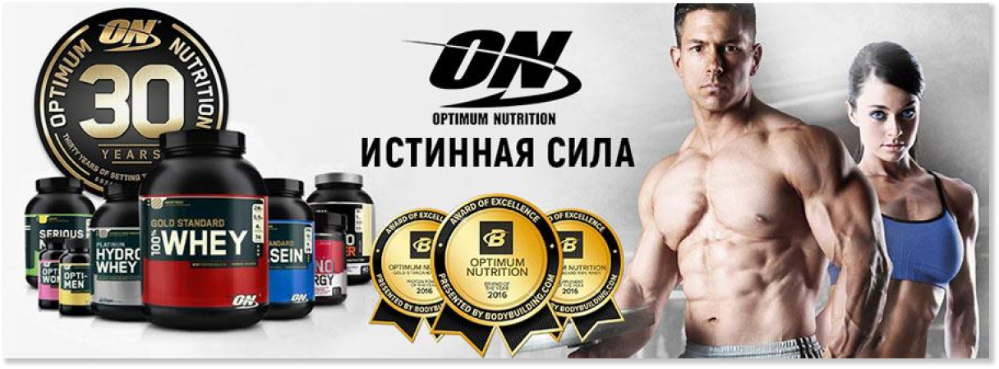
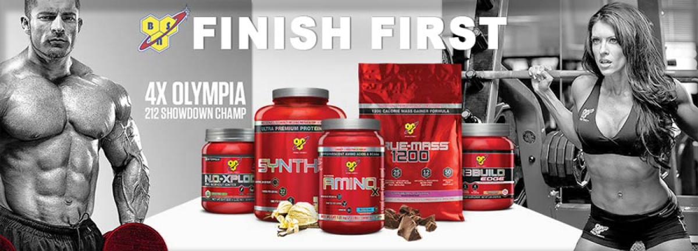
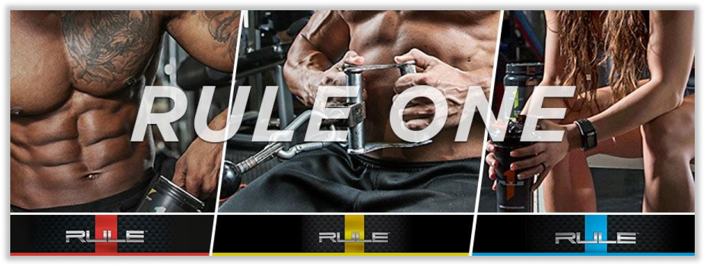
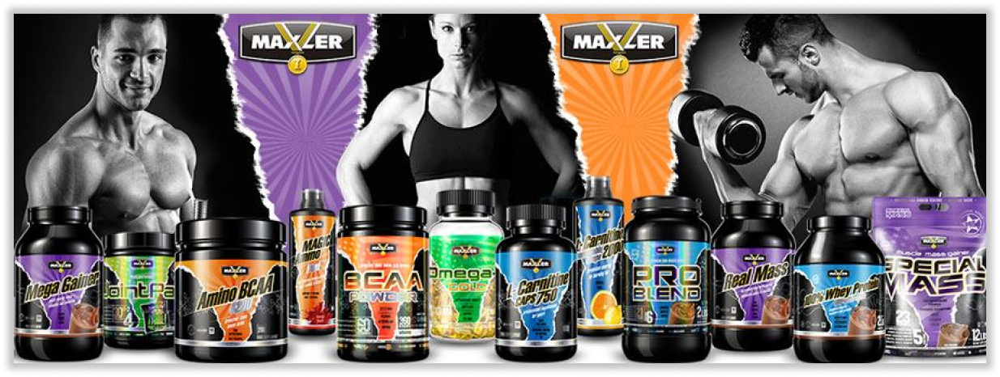

/ Производители
Нас выбирают лучшие!
Optimum Nutrition

Компания Optimum Nutrition (Оптимум Нутришн) известна широким спектром сбалансированных и высокотехнологичных продуктов для питания спортсменов и атлетов – это и протеины, и аминокислоты, гейнеры и многое другое. Положительные отзывы от профессиональных спортсменов и бодибилдеров, покупающих спортивное питание Optimum Nutrition, можно услышать по всему миру.
Optimum Nutrition Inc производит свою продукцию на собственных современных заводах, три из которых расположены в США и один в Европе. Компания владеет и управляет двумя премиальными брендами спортивного питания: Optimum Nutrition (ON) и ABB (American Body Building). Благодаря правильному и сбалансированному составу всего спортивного питания, вы легко и быстро, а самое главное – безопасно, добьётесь желаемых результатов.
В нашем магазине вы можете купить полный ассортимент спортивного питания Optimum Nutrition из США – протеины, BCAA, аминокислоты, гейнеры, витамины и многое другое. В том числе и знаменитый протеин 100% Whey Gold Standard, который на протяжении многих лет и по сей день занимает высокие рейтинги среди потребителей, является самым продаваемым протеином в мире и каждый год завоевывает звание «Протеин года».
BSN
Компания BSN (Bio-Engineered Supplements and Nutrition) была основана в 2001 году. С тех пор BSN (БСН) стал мировым лидером в индустрии спортивного питания благодаря неустанной преданности к созданию функциональных, дающих результат продуктов.

Сам бренд BSN и его продукты были удостоены более 35 специализированных наград в области спортивного питания за последние 6 лет, и ни одна другая компания отрасли пока не достигла такого показателя.
BSN - FINISH FIRST!
Самое главное: спортивное питание BSN превзойдет все ваши ожидания! Если вы действительно хотите получить результат, то вы не ошибетесь, покупая спортивное питание от BSN.
Среди наиболее популярных продуктов BSN можно отметить энергетик NO-Xplode, аминокислоты Amino X, знаменитые креатин CELLMASS и протеин Syntha-6. Все эти продукты неоднократно завоевывали звание продукта года в своих категориях питания.
Rule 1
Rule 1 (R1 Rule One Proteins) – американский бренд спортивного питания от основателей Optimum Nutrition братьев Кастелло. При создании линейки продукции Rule 1 были заложены инновационные технологии, сопряженные с высокой эффективностью компонентов.

Разработка формул велась с учетом накопленного опыта владельцев бренда с учетом последних научных достижений в отрасли. Качество готовой продукции отслеживается на всех этапах производства – от закупки качественного сырья до тестирования и упаковки. При выборе сырья производитель ориентируется в первую очередь на его качество, а не на стоимость. Все это делается для максимально полной уверенности в безопасности всей продукции.
Maxler
Спортивное питание Maxler (Макслер) производится на современном высокотехнологичном оборудовании на заводах, расположенных в США и Германии. Использование только высококачественного сырья в готовой продукции позволяет Maxler поддерживать американский стандарт GMP и европейский IFS.

Усилия компании направлены на разработку первоклассных продуктов, отвечающих требованиям как профессиональных спортсменов, так и любителей, ведущих активный образ жизни. Широкая линейка продуктов включает полный спектр спортивного питания: от протеинов и гейнеров до витаминных комплексов, в помощь на пути достижения поставленных вами целей.